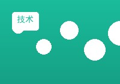
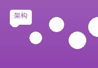

本文将深入探讨构建高性能Web应用的关键技术和最佳实践，包括前端优化、后端架构设计、数据库优化等多个方面...

如何构建高性能的Web应用程序：从架构到优化的完整指南
MySQL数据库性能优化实战：索引设计与查询优化
数据库性能优化是Web应用开发中的重要环节。本文将详细介绍MySQL索引设计原则、查询优化技巧以及常见的性能瓶颈解决方案...
职场新人的成长之路：从实习生到技术专家
分享我从一名实习生成长为技术专家的心路历程，包括学习方法、项目经验、职业规划等方面的经验和建议...
Vue.js 3.0 新特性详解与实战应用
Vue.js 3.0带来了许多激动人心的新特性，包括Composition API、更好的TypeScript支持、性能优化等。本文将详细介绍这些新特性...

PHP 8.0 新功能介绍与升级指南
PHP 8.0是PHP语言的一次重大更新，引入了JIT编译器、命名参数、联合类型等众多新特性。本文将详细介绍这些新功能...